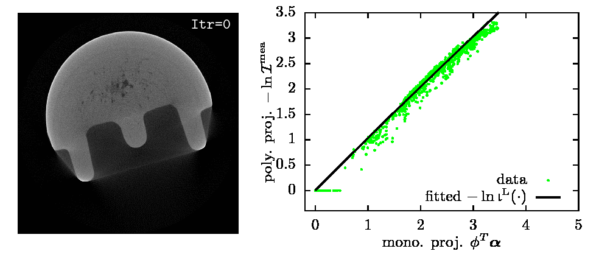

Blind X-ray CT Image Reconstruction from Polychromatic Measurements
Renliang Gu and Aleksandar Dogandžić
Summary
We propose a method for sparse image reconstruction from polychromatic computed tomography (CT) measurements under the blind scenario where the material of the inspected object and the incident-energy spectrum are unknown. Our framework is general and applies for both the Poisson and lognormal noise assumption.
This is the first model that expresses noiseless CT measurements in a form of Laplace transform. This new representation may open a new gate to handle the beam hardening artifacts and lead to a new framework for signal reconstruction and material characterization from polychromatic measurements.
In many scenarios, knowing the incident spectrum and the inspected material may be challenging. Our method, requiring no more information than the conventional FBP method, simplifies the beam hardening correction and extends the usage to the scenarios where X-ray spectrum or material to inspect is unknown.
This work is supported by the National Science Foundation under Grant CCF-1421480.
Illustration of our Iterative NPG-BFGS Method
|  |
Estimated \(\balpha\) and \(-\ln\bigl(\b{b}^\text{L}(\cdot)\bcI\bigr)\) from 360 fanbeam real X-ray CT projections.
Real X-ray CT data: courtesy of Dr. Joseph N. Gray, Center for Nondestructive Evaluation, Iowa State University.
Background
According to the Lambert-Beer's law, the fraction \(\dif \cI / \cI\) of plane wave intensity lost in traversing an infinitesimal thickness \(\dif\ell\) at Cartesian coordinates \((x,y)\) is proportional to \(\dif\ell\), so that
\[ \begin{equation} \frac{\dif \cI}{\cI} = - \mu(\varepsilon) \alpha(x,y) \dif\ell. \label{eq:beerLaw1} \end{equation} \]
where
\(\mu(\varepsilon)\) is the mass attenuation coefficient of the material (in cm\(^2/\)g), which depends only on the photon energy \(\varepsilon\),
\(\alpha(x,y)\) is the density map of the inspected object (in \(\text{g}/\text{cm}^3\)).
Therefore, a monochromatic X-ray signal at photon energy \(\varepsilon\) attenuates exponentially as it penetrates an object composed of a single material:
\[ \begin{equation} \cI^{\text{out}} = \cI^{\text{in}} \exp\Bigl[ - \mu(\varepsilon) \int_\ell \alpha(x,y) \dif\ell\Bigr]. \label{eq:monotoneModel} \end{equation} \]
where \(\cI^{\text{out}}\) and \(\cI^{\text{in}}\) are the emergent and incident X-ray signal energies, respectively.
However, X-rays generated by vacuum tubes are not monochromatic. To describe the polychromatic X-ray source, assume that its incident intensity \(\cI^{\text{in}}\) spreads along photon energy \(\varepsilon\) following the density \(\iota(\varepsilon)\), i.e.,
\[ \begin{equation} \label{eq:constanttotalenergy} \int \iota(\varepsilon) \dif\varepsilon = \cI^{\text{in}}. \end{equation} \]
Then, the noiseless measurement collected by an energy integral detector upon traversing a straight line \(\ell=\ell(x,y)\) is
\[ \begin{equation} \cI^{\text{out}}=\int \iota(\varepsilon) \, \exp\Big[- \mu(\varepsilon) \, \int_\ell \alpha(x,y) \, \dif\ell\Big] \, \dif\varepsilon. \label{eq:polyModel0} \end{equation} \]
Main Idea
 |
Assumption:
Objective:
Based on the fact that mass attenuation \(\kappa(\varepsilon)\) and incident spectrum density \(\iota(\varepsilon)\) are both functions of \(\varepsilon\), our idea is to:
For invertible \(\kappa(\varepsilon)\), define its inverse as \(\varepsilon(\kappa)\) and |
\[ \begin{align} \mathcal{I}^{\mathrm{in}} &= \int \iota(\varepsilon(\kappa)) |\varepsilon’(\kappa)| d\kappa,\\ \mathcal{I}^{\mathrm{out}} &= \int \iota(\varepsilon(\kappa)) |\varepsilon’(\kappa)| \exp\Bigl[ -\kappa \int_\ell \alpha(x,y) d\ell\Bigr] d\kappa \end{align} \]
Download
Clone or press “Download ZIP” button in the right panel of imgRecSrc's GitHub page.
Usage
opt.E=20; opt.maxItr=2e3; opt.thresh=1e-6; opt.u=1e-5; output=beamhardenSpline(Phi,Phit,Psi,Psit,y,initSig,opt);
where Phi and Phit are the function handles that implement the forward and backward 2D X-ray CT projections, Psi and Psit are the function handles for inverse discrete wavelet transform (DWT) and DWT, and initSig is the initialization for the iterative algorithm. y=-ln(Imea(:)/max(Imea(:))) where Imea is a matrix of size \(N\times p\) for the 2D X-ray CT measurements. Here, \(N\) is the number of sampling points for each projection and \(p\) is the number of projections. initSig is usually set to the FBP reconstruction from y.
The output will be a structure bearing everything that is needed; see the beamhardenSpline source code for detail.
The default regularization method, opt.proximal='wvltADMM', we use here is the nonnegativity and the \(\ell_1\)-norm of the wavelet coefficients of the image. However, setting opt.proximal to 'nonneg' switches the algorithm to use only the nonnegativity constraints only. Other options such as opt.proximal='tviso' and opt.proximal='tvl1' employs the nonnegativity and total-variation (TV) regularization.
Note that in the cases other than opt.proximal='wvltADMM', Psi and Psit can be set to []. For opt.proximal='nonneg', the algorithm is basically a maximum likelihood algorithm. So, setting smaller number of iterations limit, e.g., 500, gives fast and decent solution.
Reference:
R. Gu and A. Dogandžić, “Blind X-ray CT Image Reconstruction from Polychromatic Poisson Measurements,” IEEE Trans. Comput. Imag., vol. 2, no. 2, pp. 150–165, 2016. [BibTex] [DOI] [PDF] [Poster]
@STRING{IEEE_J_CI = "{IEEE} Trans. Comput. Imag."}
@article{gd16beamharden,
Author = {Renliang Gu and Aleksandar Dogand\v{z}i\'c},
Journal = IEEE_J_CI,
Title = {Blind {X}-ray {CT} Image Reconstruction from Polychromatic
{P}oisson Measurements},
volume={2},
number={2},
pages={150-165},
doi={10.1109/tci.2016.2523431},
Year = 2016
}
R. Gu and A. Dogandžić, (Sep. 2015). Polychromatic X-ray CT image reconstruction and mass-attenuation spectrum estimation. arXiv: 1509.02193 [stat.ME]. [slides]
R. Gu and A. Dogandžić, “Polychromatic sparse image reconstruction and mass attenuation spectrum estimation via B-spline basis function expansion,” in Rev. Prog. Quant. Nondestr. Eval., D. E. Chimenti and L. J. Bond, Eds., ser. AIP Conf. Proc. Vol. 34 1650, Melville, NY, 2015, pp. 1707–1716. (This paper is on the lognormal measurement model with \(\ell_1\)-norm regularizations) [BibTex] [DOI] [PDF]
@string{qnde = { {Rev. Prog. Quant. Nondestr. Eval.} } }
@inproceedings{gdqnde14,
Address = {Melville, {NY}},
Author = {Gu, Renliang and Dogand\v{z}i\'c, Aleksandar},
Booktitle = QNDE,
Series = {AIP Conf. Proc.},
Editor = {Dale E. Chimenti and Leonard J. Bond},
Title = {Polychromatic Sparse Image Reconstruction and Mass
Attenuation Spectrum Estimation via {B}-Spline Basis Function
Expansion},
volume={34 1650},
Year = {2015},
pages={1707-1716}
}
R. Gu and A. Dogandžić, “Beam hardening correction via mass attenuation discretization,” in Proc. IEEE Int. Conf. Acoust., Speech, Signal Process., Vancouver, Canada, May 2013, pp. 1085–1089. [BibTeX] [DOI] [PDF] [poster]
@string{icassp = { {Proc. IEEE Int. Conf. Acoust., Speech, Signal Process.} } }
@conference{GuDogandzic2013,
title ={Beam Hardening Correction Via Mass Attenuation Discretization},
booktitle = ICASSP,
author = {Gu, Renliang and Dogand\v{z}i\'c, Aleksandar},
Address = {Vancouver, Canada},
Month = may,
pages={1085-1089},
year = 2013
}